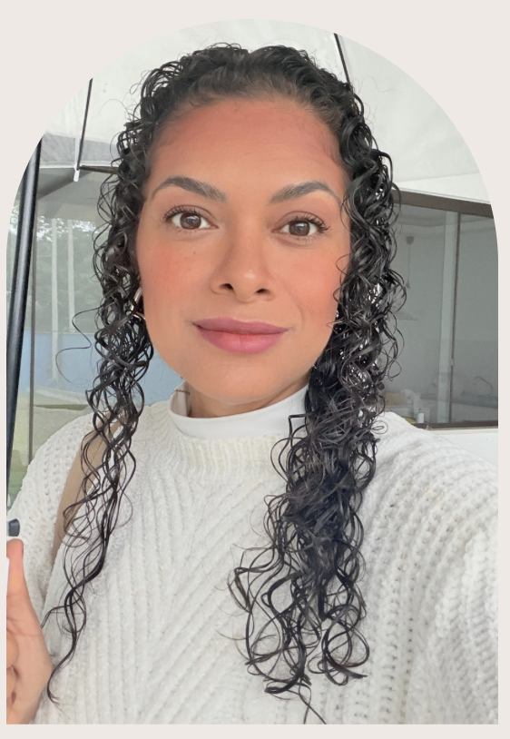
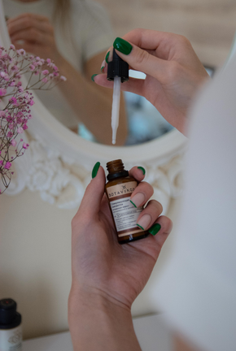
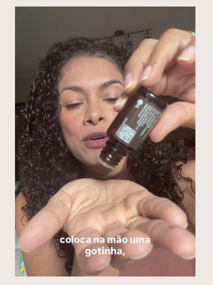
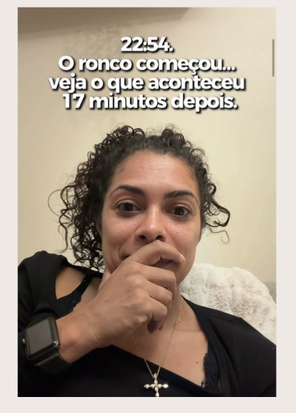
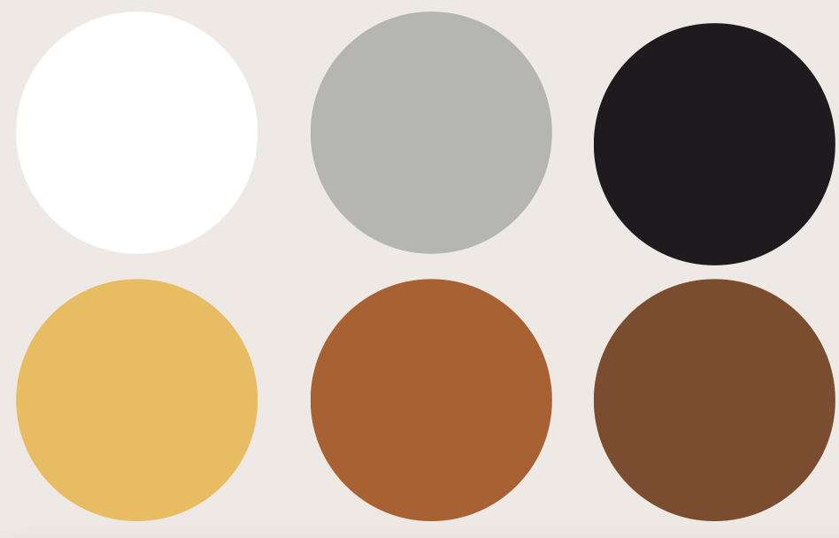
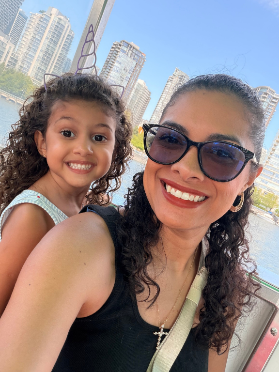
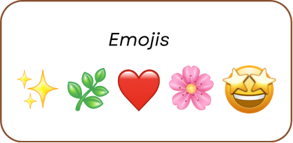
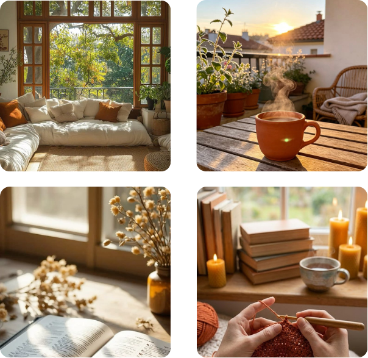
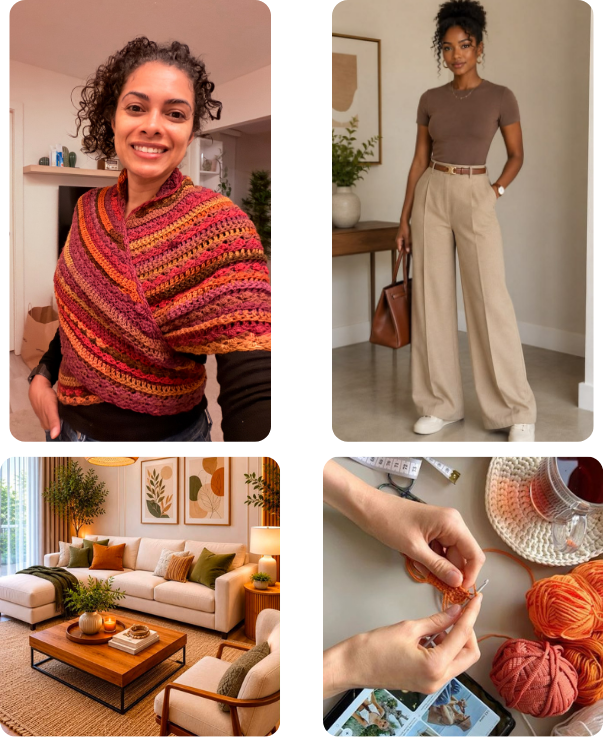
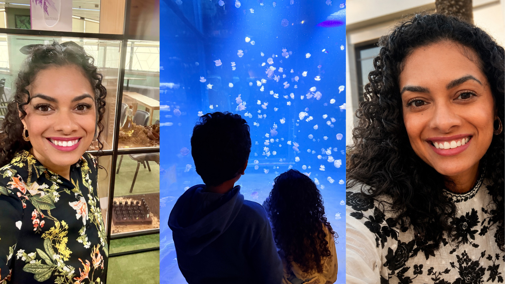

Ajudo marcas a se conectarem com seus clientes de forma real e próxima. Uso senso estético, narrativas que prendem atenção e uma visão estratégica de performance pra transformar produtos em experiências que as pessoas realmente sentem — não em mais um anúncio. O objetivo é sempre mostrar a verdade de quem consome, criando vídeos que geram engajamento, confiança e resultado de verdade.

Meus valores são verdade, transparência e conexão real: nunca abro mão da verdade para me beneficiar de algo, sou 100% transparente com quem confia no meu trabalho, e busco sempre gerar conexão verdadeira. É assim que trabalho — criando conteúdo para empresas e desenvolvendo parcerias estratégicas e duradouras.
Meu objetivo é criar um formato que foge do óbvio, me tornando uma referência.
[CINEMA-VENDAS]
Conteúdos estilo cinema com especificações do produto.
[CINEMA-BRANDING]

Cinema em função de gerar branding para uma empresa.
[CINEMA-VENDAS]

Conteúdos estilo cinema com especificações do produto.
[CINEMA-BRANDING]

Cinema em função de gerar branding para uma empresa.
Introduzir produtos no meu dia a dia
Criar conteúdos que contam histórias e geram conexão real.
Exemplo: usar um fone de ouvido bloqueador de ruído externo para conseguir assistir uma aula online, enquanto meus filhos brincam no mesmo espaço.



Quem sou eu?
Sou a Deborah, criadora de conteúdo UGC que transforma o dia a dia real — o caos bom da casa, dos filhos, da rotina — em conteúdo estratégico para marcas. Não crio cenário, crio verdade: cada vídeo nasce de um uso real do produto, e é isso que conecta e vende.
Como quero ser vista?
Como a criadora que uma marca escolhe quando quer resultado de verdade, não só estética. Alguém organizada, estratégica e de confiança — que entrega no prazo e entende tanto de performance quanto de estética.
Nicho:
Maternidade, bem-estar e crochê - o universo que eu vivo de verdade, todos os dias.


